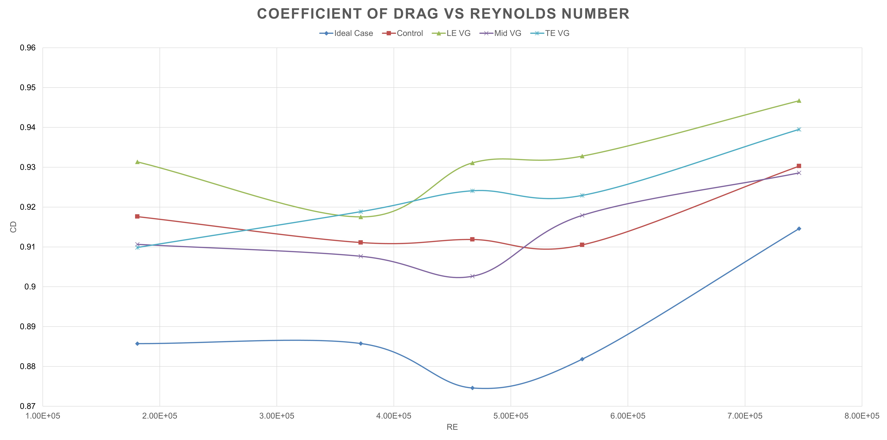

Overview
Investigated the effect of vortex generator (VG) placement on aerodynamic drag reduction for a bluff-body vehicle. Conducted wind tunnel testing and flow visualization to identify optimal VG positioning for minimizing flow separation.
Tools & Methods
- Wind tunnel testing (open-circuit)
- Flow visualization (smoke + surface tufts)
- Drag force measurement (pistol grip sensor)
- Data analysis: coefficient of drag (Cd) and power loss
- Dimensional analysis using Reynolds number scaling
Experimental Setup
Tested a 1:12 scale stock car model across Reynolds numbers from 1.6×10⁵ to 6.6×10⁵. Evaluated five configurations:
- No vortex generators (baseline)
- Front placement (~5% body length)
- Mid placement (~50%)
- Rear placement (~80%)
- Optimized placement (~65%)

Key Engineering Insights
Flow Behavior
Vortex generators energize the boundary layer, delaying flow separation and reducing wake size. Flow visualization showed that properly placed VGs maintained attachment further along the vehicle body.
Placement Sensitivity
VG effectiveness was highly dependent on placement:
- Front placement: Increased drag due to early turbulence and higher skin friction
- Mid placement: Minimal or inconsistent impact
- Rear-mid (~65%): Most effective — delayed separation and reduced wake
Results
Drag Reduction
The optimized VG placement reduced drag by approximately ~3% compared to the baseline across tested Reynolds numbers.

Power Impact
Although drag reduction was measurable, the corresponding decrease in power loss was minimal at this scale, indicating limited real-world impact under low Reynolds number conditions.
Key Takeaways
- Small geometric changes can significantly affect boundary layer behavior
- VG placement is more critical than VG presence
- Flow visualization is essential for interpreting aerodynamic performance
- Scaling limitations (Re mismatch) can affect real-world applicability